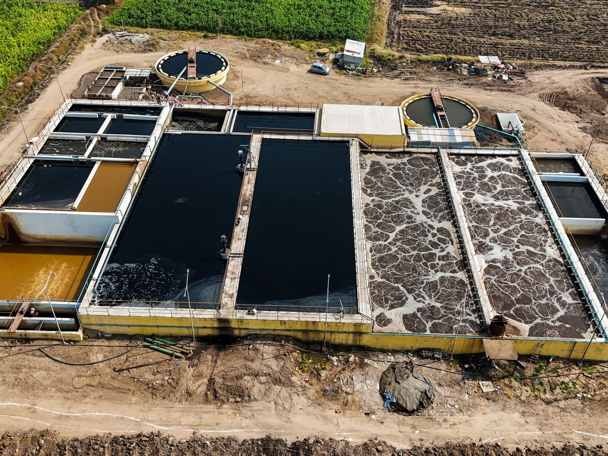
Sugar Industry ETPs
For the seasonal, acidic, high-COD effluent of sugar mills.
- SS316 screens for bagasse & fibres
- Oil & grease removal
- Lime neutralization + anaerobic-aerobic train

Robust ETPs for sugar, distillery and process industries, combining physico-chemical, anaerobic, aerobic and tertiary treatment to meet pollution control norms and enable water reuse.
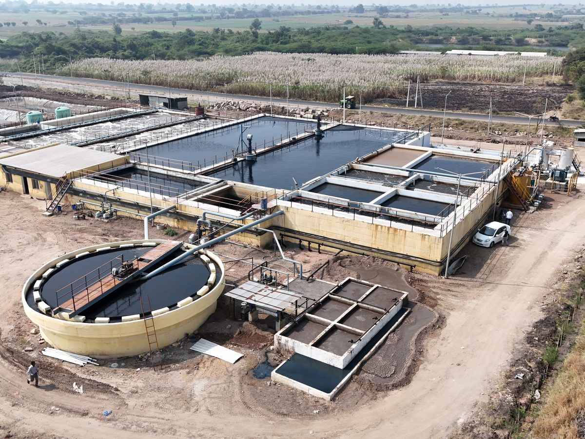
Industrial operations generate wastewater loaded with organic matter, suspended solids, oil, grease and chemicals. In sugar mills, effluent from floor washing, equipment cleaning, boiling house and cooling sections is acidic (pH 4–5) with COD up to 10,000 ppm, and carries bagasse fibres and oil. Discharged untreated, it pollutes water bodies and breaches pollution control norms.
An Effluent Treatment Plant (ETP) removes these pollutants through screening, physico-chemical treatment, biological treatment and tertiary polishing. SBS Water & Infra Projects Pvt. Ltd. designs, manufactures, installs and commissions ETPs built around each client's effluent characteristics, flow and discharge or reuse requirements.
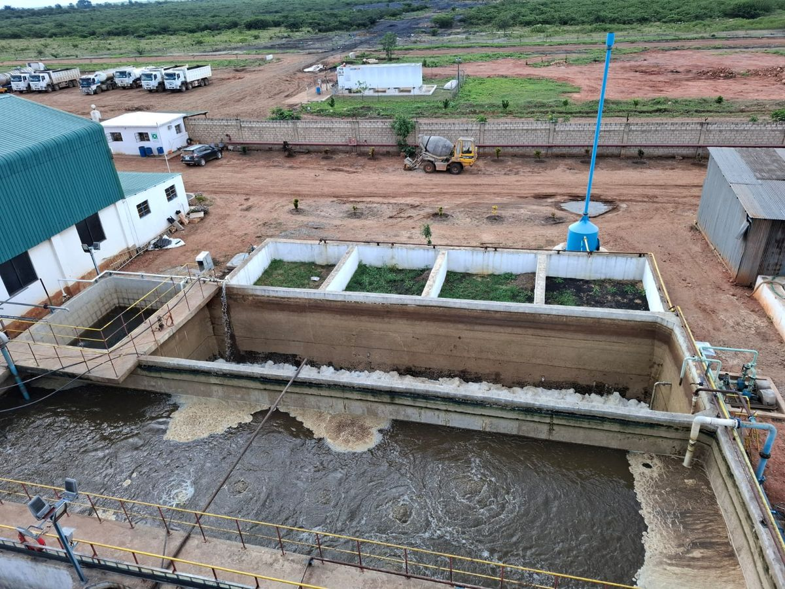
Each ETP is configured to the effluent characteristics, flow rate and required outlet quality.

For the seasonal, acidic, high-COD effluent of sugar mills.
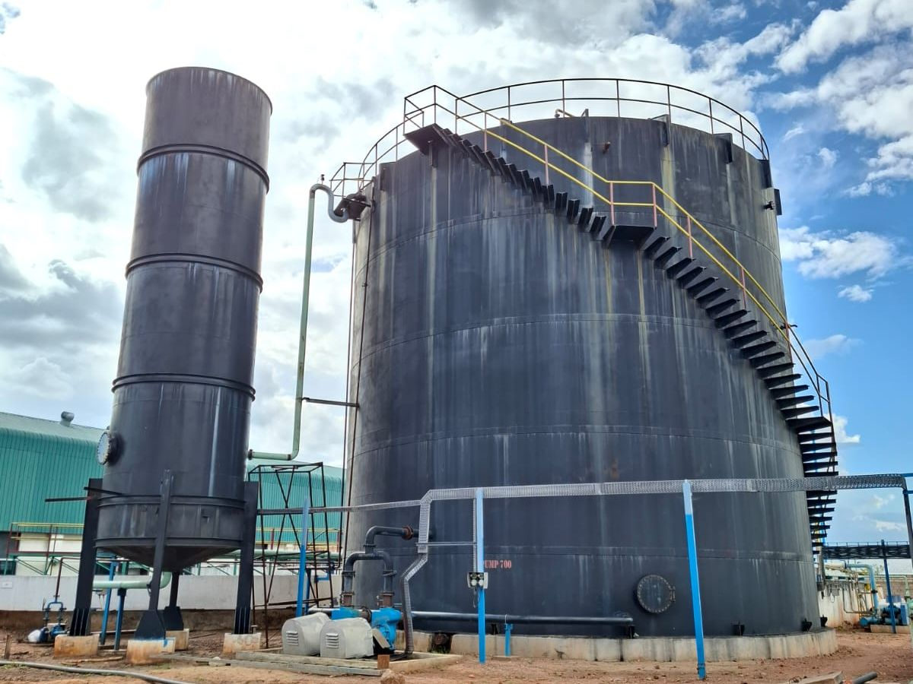
Advanced anaerobic (CSTR, EGBR) and aerobic (ASP, MBBR, SBR / eSBR) technologies for high-strength effluent.
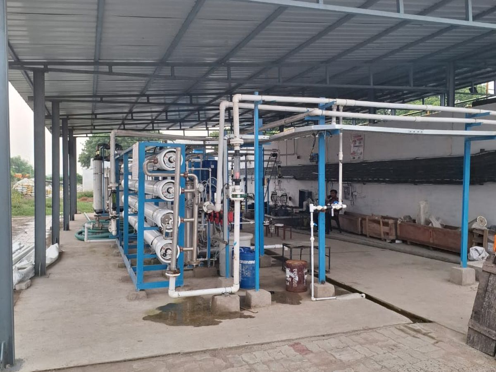
Tertiary Ultrafiltration and Reverse Osmosis recover treated effluent for process or cooling tower reuse.
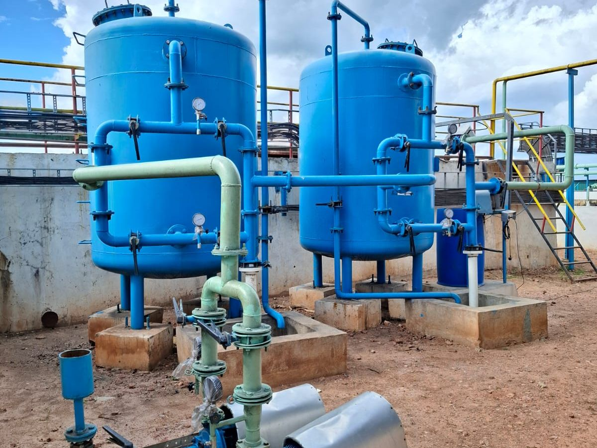
For difficult effluents and stricter discharge norms.
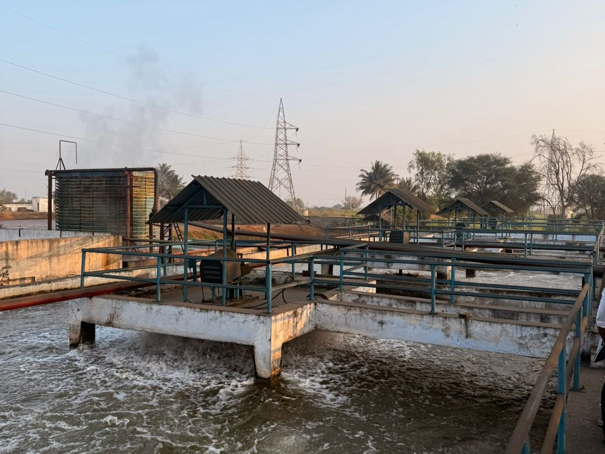
For existing ETPs that are overloaded or not meeting norms.
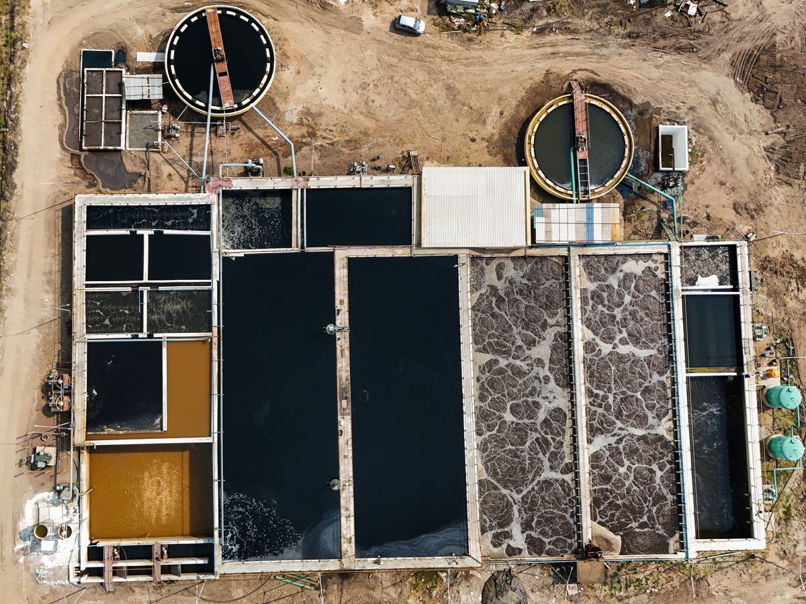
Thickening and dewatering systems that turn ETP sludge into a manageable by-product.
Our standard sugar ETP scheme, based on a 3,000 KLD (150 m³/h, 20 h/day) design, treats effluent in five stages. Units are selected and sized according to effluent analysis.
SS304 bar screens with 10 & 20 mm spacing remove large debris.
A belt-type oil skimmer removes floating oil and grease.
SS316 wedge-wire screens with 0.5 mm slots remove bagasse and fine fibres.
A large collection tank with air-grid mixing balances flow and composition.
Coagulants and flocculants are rapidly, then gently, mixed to form flocs.
Remove suspended solids, colloids and residual oil.
Lime dosing raises the acidic effluent to a pH suitable for biology.
Removes the bulk of COD and BOD without oxygen; biogas is collected in a gas holder with flame arrester.
Twin-lobe blowers and a fine air grid supply oxygen; nutrients sustain the biomass.
A 17 m diameter clarifier with scraper separates biomass for recirculation.
Final chemical dosing and settling remove remaining fine solids.
Remove residual turbidity, colour and odour.
Hypochlorite disinfects water before the treated water tank.
Clarifier sludge is thickened in the sludge holding tank and Imhoff tank, then dewatered on drying beds for disposal or use as manure.
Design values from our 3,000 KLD sugar industry ETP.
| Parameter | Raw Effluent | After Biological Treatment |
|---|---|---|
| pH | 4.0 – 5.0 | 6.5 – 8.5 |
| COD | 10,000 ppm | < 250 ppm |
| BOD | 7,500 ppm | < 100 ppm |
| Oil & Grease | 10 – 50 ppm | < 10 ppm |
| TSS | 500 – 600 ppm | Further reduced in tertiary filtration |
| TDS | 5,000 – 6,000 ppm | Approx. inlet +10% |
Actual outlet quality depends on effluent characteristics; each plant is designed after analysing the client's effluent.
| Stage | Units | Removes / Does |
|---|---|---|
| Pre-treatment | Bar screens, oil & grease skimmer, mechanical screen | Debris, bagasse, fibres, floating oil |
| Equalization | Collection tank with air-grid mixing | Balances flow and composition |
| Physico-chemical | Flash mixers, flocculation, tube settlers, clarifier | Suspended solids, colloids, oil & grease |
| Neutralization | Lime dosing & mixing | Raises acidic pH for biology |
| Anaerobic | CSTR with gas holder & flame arrester | Major COD/BOD reduction; biogas |
| Aerobic | Aeration tank, blowers, secondary clarifier | Polishes remaining organic load |
| Tertiary | Tube settler, MGF, activated carbon filter | Residual solids, colour, odour |
| Disinfection | Chlorine dosing | Pathogens |
| Sludge | Holding tank, Imhoff tank, drying beds | Thickens & dewaters sludge |
Lower power use, less sludge and biogas recovery.
SS304 / SS316 screens built for bagasse-laden effluent.
High-rate solids removal in a small footprint.
Working + standby critical pumps and blowers.
Digital and ultrasonic open-channel flow metering.
Pressure vessels, tube media, panels and dosing skids.
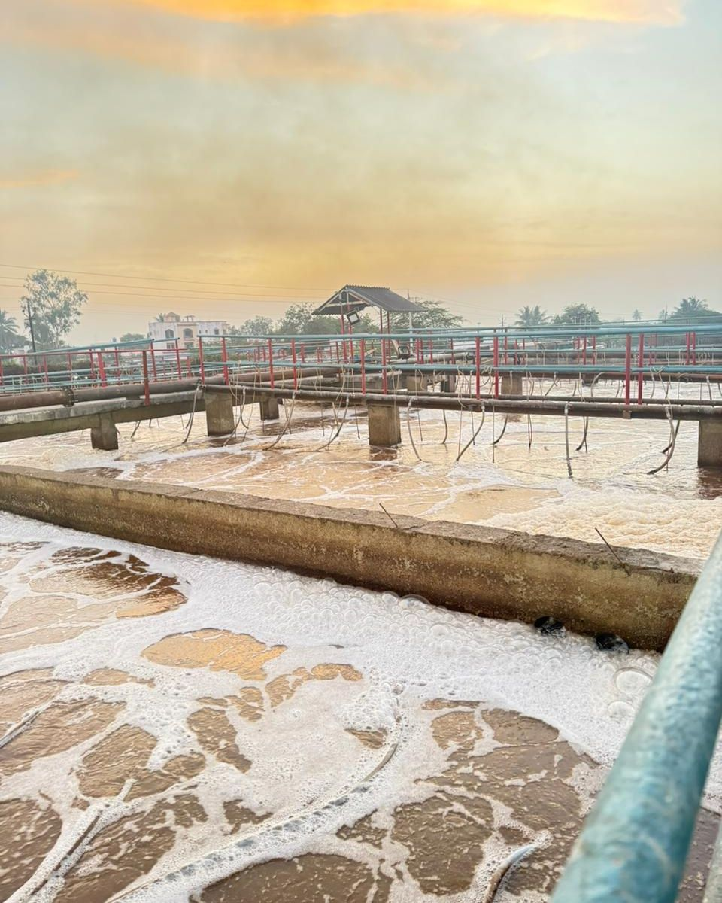
Regulatory compliance – treated water within pollution control board norms.
Water reuse – for gardening, irrigation and utilities; with UF + RO, for process reuse.
Lower energy cost – the anaerobic stage cuts aeration power and produces biogas.
Sludge value – dried sludge can be used as manure.
ZLD ready – the first step towards Zero Liquid Discharge.
Peace of mind – reliable, low-maintenance operation with standby equipment.
From effluent characterization to biological start-up and pollution control board documentation support.
A 2,400 KLPD sugar ETP with Ultrafiltration and Reverse Osmosis, recovering treated effluent for reuse within the plant.
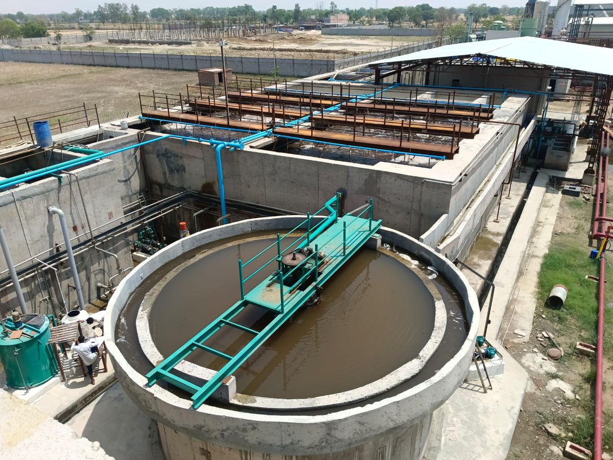
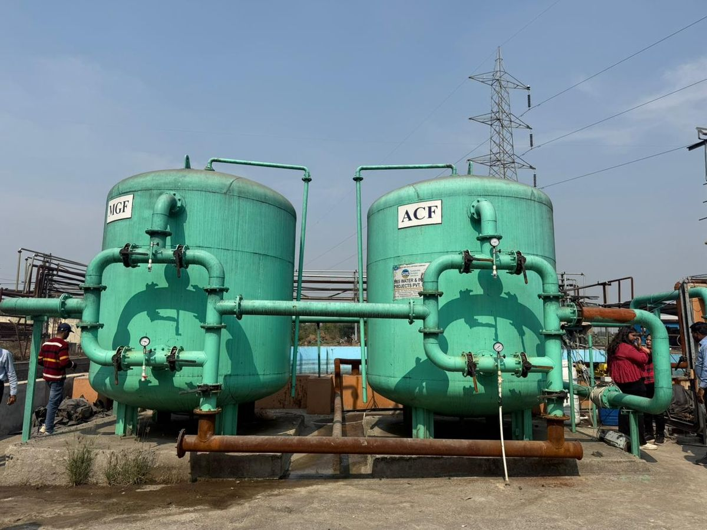
| Client | Plant | Capacity |
|---|---|---|
| Balrampur Chini Mills, Balrampur | Sugar ETP + UF + RO | 2,400 KLPD |
| Ayyan Multitrade LLP | ETP & CPU | 2,200 KLPD |
| Mrunal Sugars Ltd., Dharwad | CPU & ETP | 1,550 KLPD |
| Belgaum Sugars Ltd., Belgaum | Sugar ETP | 1,200 KLPD |
| Quenergy Sugars Pvt. Ltd., Solapur | ETP | 1,200 KLPD |
Upcoming in 2026: ETP for MRN Bhima Sugar & Power (1,500 KLD), new ETPs for Satish Sugars (1,600 KLD) and Mrinal Sugars (1,200 KLD), and ETP upgradation for Satish Sugars (1,200 KLD).
Focused expertise in sugar and distillery effluent treatment.
CSTR, EGBR and anaerobic filters for high-strength effluent.
ETP, CPU, WTP, STP, RO and ZLD from one partner.
Our Talawade facility ensures quality and timely delivery.
Greenfield projects and revamps of existing ETPs.
Offices in Pune, Talawade and Nipani for faster support.
An ETP treats industrial wastewater to remove organic load (COD/BOD), suspended solids, oil & grease and other pollutants, so the water can be safely reused or discharged within pollution control board norms.
Sugar mill effluent comes from floor washing, equipment cleaning, boiling house and cooling sections. It is acidic (pH 4–5) with high COD and BOD, plus bagasse fibres, oil and grease. Distilleries generate high-strength process effluents that need robust anaerobic treatment.
Anaerobic systems such as CSTR remove most of the COD with low power use and generate biogas. Aerobic treatment then polishes the remaining load, keeping blower power and sludge lower than an aerobic-only plant.
Yes. After tertiary filtration and disinfection, treated water can be used for gardening, irrigation and utilities. With UF and RO added, it can be recovered for process or cooling tower reuse, moving towards Zero Liquid Discharge.
Yes. We troubleshoot and upgrade existing ETPs, including capacity enhancement, adding anaerobic or tertiary stages, replacing equipment and improving outlet quality to meet revised norms.
Statutory approvals are in the client's scope, but we provide technical documentation and support for pollution control board requirements whenever needed.
Share your effluent analysis and flow. Our engineers will design a treatment scheme suited to your plant and discharge requirements.
Get a Free Consultation